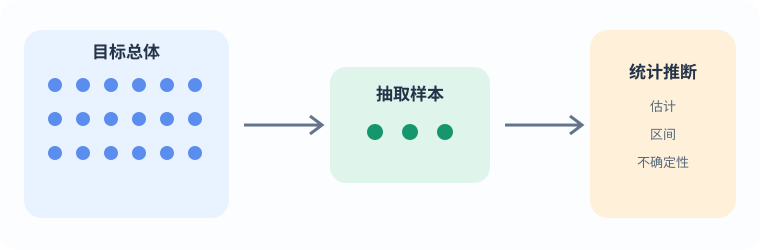

第一章：什么是统计学
统计学并不是一套脱离数学的经验技巧，而是用数据描述不确定性、检验假设并支持决策的方法。学习统计学不应从机械背公式开始，而应先理解研究问题、数据和结论之间的关系。
本章学习目标
- 统计学的定义
- 描述vs推断
- 总体与样本

交互实验：样本量如何影响估计稳定性
假设总体标准差约为 6。增加样本量会降低样本均值的标准误，但不会消除抽样偏差。
交互控件加载后，可调整参数并观察统计量的变化。
想象一下：你面前有一堆数字——可能是用户的点击数据、医院的病人记录、或者股市的交易行情。你盯着它们看，想知道背后藏着什么规律。这就是统计学的起点：从数据中提取信息，用信息做决策。
1.1 统计学的起源：从赌博到科学
统计学的故事，要从17世纪的法国赌场说起。一位名叫德·梅尔的赌徒发现一个困扰他的问题：两个骰子掷24次，至少出现一次"双六"的概率有多大？直觉告诉他应该是2/3，但实际结果总是不对。
1654年，他写信请教数学家帕斯卡。帕斯卡和费马因此展开了一场著名的通信，解决了这个"点数分配问题"。这场讨论被后人视为概率论的诞生，而概率论正是统计学的数学地基。
但统计学的真正起飞，是在19世纪末20世纪初：
- 1894年：Karl Pearson 提出卡方检验，并创办了世界上第一个统计系（UCL）
- 1908年：William Gosset 以"Student"为笔名发表t分布论文——他在吉尼斯啤酒厂工作，研究小样本发酵数据
- 1925年：R.A. Fisher 出版《研究工作者的统计方法》，奠定了现代推断统计的框架（p值、方差分析、最大似然都是他的手笔）
- 1933年：Neyman 和 Pearson（Karl的儿子）建立了假设检验的完整理论体系
有趣的事实：Gosset 用笔名"Student"是因为吉尼斯禁止员工发表论文——他们怕泄露商业机密。结果这篇《The Probable Error of a Mean》成了统计学历史上引用最多的论文之一。t检验里的"t"就是来自"Student"。
1.2 描述统计 vs 推断统计：统计学的两条腿
统计学本质上分成两个世界，理解这个二分法非常关键：
| 维度 | 描述统计 | 推断统计 |
|---|---|---|
| 做什么 | 总结和描述已有的数据 | 从样本推断总体 |
| 工具 | 均值、中位数、标准差、直方图 | 置信区间、假设检验、回归 |
| 典型问题 | "上个月用户平均消费是多少？" | "新算法比旧算法快吗？" |
| 确定性 | 描述的是事实 | 给出的是概率结论 |
| 类比 | 给一张照片配文字说明 | 从几张照片推测整个相册 |
举个例子。如果你有一份1000名用户的消费数据，算出平均消费500元——这是描述统计。但如果你随机抽了100名用户，发现平均消费480元，然后说"全体用户的平均消费大概是460-500元之间"——这就是推断统计。
我在实际工作中经常看到新人把两者搞混。比如拿着100个样本算出平均数是37.2，就在报告里写"总体均值是37.2"。严格来说，你应该写"样本均值37.2，总体均值的95%置信区间为[34.1, 40.3]"。
关键洞察：描述统计回答"What happened?"，推断统计回答"What can we conclude?"。前者是后者的基础——如果连数据长什么样都不知道，就别急着下结论。
1.3 总体与样本：统计学最基础的概念
统计学里最核心的一对概念，就是总体（Population）和样本（Sample）。
总体是你要研究的全部对象。比如"全中国的成年男性身高"，中国所有成年男性就是总体。问题来了——你不可能把每个人都量一遍。这就是为什么需要样本：从总体中抽取出来的一部分个体。
这里有一个非常微妙但重要的点：总体参数 vs 样本统计量。
- 总体均值用希腊字母 μ（mu） 表示——这是真值，但你几乎永远不知道
- 样本均值用 x̄（x-bar） 表示——这是估计值，你可以算出来
- 总体标准差用 σ（sigma） 表示，样本标准差用 s 表示
这个符号差异不是装腔作势——它时时刻刻提醒你：你看到的只是估计，不是真相。
⚠️ 常见错误：我见过不少数据分析师把样本统计量当总体参数来汇报。一个电商团队拿着200个用户的数据算出转化率5%，就信心满满地说"我们全平台的转化率是5%"。实际上，样本量200的情况下，真实转化率可能在2%到8%之间的任何位置。这种"把估计当真相"的习惯，是统计灾难的第一推手。
1.4 变量与数据类型
做统计分析之前，必须先搞清楚你的变量是什么类型。不同的数据类型决定了你能用什么方法——拿分类变量去算均值，就像用温度计测身高一样荒谬。
| 变量类型 | 子类型 | 示例 | 能做的运算 |
|---|---|---|---|
| 定性（分类） | 名义（Nominal） | 性别、城市、品牌 | 计数、众数 |
| 有序（Ordinal） | 满意度评分、学历等级 | 计数、众数、中位数 | |
| 定量（数值） | 离散（Discrete） | 用户数、订单数 | 所有统计运算 |
| 连续（Continuous） | 身高、温度、收入 | 所有统计运算 |
关于有序变量，有一个我踩过的坑。某个项目里，客户用1-5分给产品打分。分析师直接算了平均分3.8并做了t检验。问题是——有序变量不保证等距。用户心里"3分到4分"的差距，可能远小于"4分到5分"的差距。严格来说，这种情况应该用非参数方法（后面章节会讲）。
另外，数据还可以按时间维度分类：
- 横截面数据（Cross-sectional）：同一时间点的多个个体。比如2025年的全国各省GDP
- 时间序列数据（Time-series）：同一个体在不同时间点的数据。比如某公司过去12个月的月收入
- 面板数据（Panel）：两者结合——多个个体、多个时间点
1.5 统计学在现代世界的角色
在2026年的今天，统计学的影响力比以往任何时候都大。不是因为统计学本身变了，而是因为数据的规模变了。
给你看几个数字：
- 全球每天产生的数据量超过 2.5 EB（艾字节）
- 一个中型电商平台每天记录的点击流数据就有几百GB
- 一个基因测序实验能产生 TB级别 的原始数据
但数据多了≠洞察多了。没有统计思维，大数据只是大噪音。这就是为什么——
- A/B测试：互联网产品迭代的核心方法论，本质就是双样本假设检验
- 机器学习：说到底是用统计模型做预测。XGBoost的基础是梯度提升，梯度提升的基础是回归树，回归树的基础是方差分解
- 因果推断：经济学领域拿了2021年诺贝尔奖的方法，正在被Uber、Netflix、Amazon大规模应用
- ABM（基于代理的建模）：疫情预测、交通模拟、金融风控，背后都是随机过程和概率分布
学习方法建议：统计学不应该像学数学那样去"推导"，而应该像学开车一样去"练习"。每学一个概念，就找一个真实数据集动手算一遍。本教程每一章都会有可运行的代码示例——打开你的Jupyter Notebook，跟着敲一遍，你会有完全不同的理解。
好了，第一章先聊到这里。我们站在了统计学的门口——知道了它从哪里来、要解决什么问题、用哪些基本概念搭建。下一章，我们深入数据的源头：数据的类型与来源。因为统计分析的第一个陷阱，往往在你拿到数据的那一刻就已经埋下了。
本章小结
先问清总体、样本和研究问题，再选择描述或推断方法。